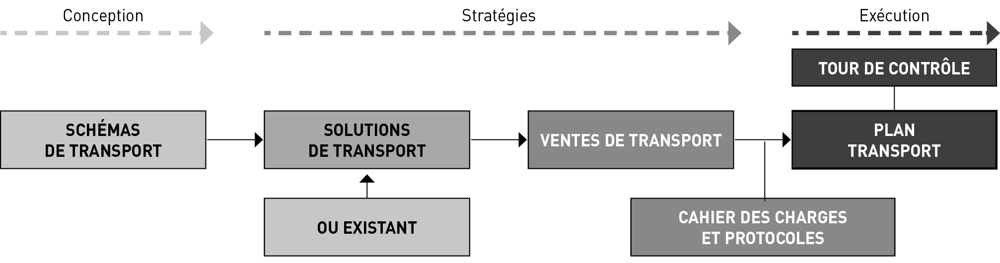

GESTION COMMERCIALE
H 2
La fonction commerciale et l’activité marketing sont des éléments-clés dont dépend la survie d’une entreprise, petite et grande, dans le secteur des transports. Cette partie du guide vous aidera à comprendre, à mieux agir sur le plan commercial et à gérer dans le long terme.
Gérer c’est prévoir, décider, programmer, exécuter et contrôler.
b Prévoir, c’est être capable d’étudier, en fonction d’une politique et d’une stratégie passée de l’entreprise, les différentes solutions envisagées pour l’orientation à donner dans le futur à cette politique et à cette stratégie.
b Décider, c’est être capable de choisir et définir des objectifs en fonction des différentes hypothèses ci-dessus.
b Programmer, c’est choisir les moyens à mettre en œuvre pour réaliser les objectifs retenus.
b Exécuter, c’est mettre en œuvre les moyens choisis.
b Contrôler, enfin, c’est analyser les résultats et les écarts par rapport aux prévisions pour maîtriser la gestion.
Mais pour gérer il faut avoir :
b Une politique, c’est-à-dire un ensemble de règles servant à atteindre des buts et des objectifs en tenant compte de ses forces, de ses faiblesses et de son environnement.
b Une stratégie, c’est-à-dire où et comment l’on veut conduire son entreprise.
b Des objectifs, c’est-à-dire fixer des buts à atteindre.
Un objectif doit être réaliste, réalisable, quantifié, quantifiable et échéancé (dates).
Pour gérer, il faut aussi connaître, par le biais d’un diagnostic interne, les forces et les faiblesses de son entreprise, c’est-à-dire les éléments qui constituent des points forts et faibles.
Par exemple, la faiblesse d’un centre de profit peut résider soit :
– dans les ressources techniques et logistiques (parc de véhicules obsolètes, informatique inadaptée…) ;
– dans l’organisation commerciale (faiblesses ou inexistence des structures ou moyens d’analyse et de contrôle), etc.
La fonction commerciale dans le marché du transport routier de marchandises
H 3
La force peut résider soit :
– dans le savoir-faire et les compétences dans une prestation : le transport de produits frais sous température dirigée, ou de lots, de messagerie, de masses indivisibles, de location de véhicules industriels (avec ou sans conducteur) à la demande ou longue durée, transport de matières dangereuses, en citernes (liquides, pulvérulents), en bennes, etc. ;
– dans les ressources humaines (une équipe jeune, compétente, motivée) ;
– etc.
Sa réussite est aussi conditionnée par sa situation au sein de son secteur économique et ses marchés (clients actuels et clients potentiels). De plus l’environnement géographique où l’entreprise de transport routier ou de location de véhicules exerce ses activités, et pas seulement où elle est implantée, est aussi un facteur primordial.
Une analyse de ces facteurs externes permet d’évaluer les nuances auxquelles le centre de profit est confronté et les opportunités qu’elle devrait saisir.
Exemple : une PMET basée dans le Rhône et spécialisée dans les transports vers l’Italie. Il y a quelques années, une dévaluation de 25 % de la lire italienne par rapport au franc français fait que vos voyages seront déséquilibrés : peu de fret pour descendre en Italie, par contre pléthore de fret dans le sens Italie-France… (c’est une analyse externe s’appuyant sur les études de marché, nous le verrons plus loin).
Vous appréhendez, dès à présent, que la mise en ouvrage puis en œuvre d’une véritable fonction (donc gestion) commerciale ne relève en rien des stéréotypes de l’improvisation, ni d’un amateurisme « éclairé » mais d’un professionnalisme rigoureux. Il est, aujourd’hui, indispensable qu’on gère cette fonction commerciale avec autant de soin, et de volonté, que la fonction exploitation.
Mais rassurez-vous : ceci ne relève pas du génie mais, simplement, du bon sens et de la rigueur, si on perçoit, enfin, qu’il y va de la pérennité des entreprises de transport routier et de location de véhicules industriels.

LA FONCTION COMMERCIALE DANS LE MARCHÉ DU TRANSPORT ROUTIER DE MARCHANDISES
1
GESTION COMMERCIALE
H 6
Techniquement, le transport routier est un process et non un produit.
En termes d’organisation, l’accomplissement de ce process se répartit entre deux régimes :
Le transport pour compte propre assuré en tant qu’activité accessoire par des entreprises agricoles, industrielles ou commerciales disposant de moyens humains et matériels de transport. On parle peu du transport routier pour compte propre, qui représente encore pourtant près de 25 % en tonnes-kilomètres transportées en France en 2021 par les véhicules de plus de 3,5 tonnes, ce qui fait des chargeurs des « transporteurs importants » et un vivier d’emploi du personnel de conduite. Ce mode d’organisation, malgré une lente érosion, reste pourtant très prisé par certains chargeurs, particulièrement pour les matériaux de construction, les denrées alimentaires, les produits agricoles et les produits manufacturés.
Le transport pour compte d’autrui assuré par des entreprises de transport routier spécialisées vendant un process et représentant aujourd’hui la plus large part du marché.
Comme nous l’avons déjà vu dans le guide, l’offre de transports pour compte d’autrui se compose en France de grandes entreprises nationales, de PME familiales et de très petites entreprises d’un ou deux salariés, auxquelles viennent s’ajouter tous les intervenants étrangers œuvrant sur le territoire français. L’offre est donc abondante, diversifiée, compétitive, mais également spécialisée par métiers, produits ou axes géographiques.
Reflet du monde du commerce, le transport connait des recompositions incessantes obligeant qui veut y être commercialement performant à rester à l’affût des évolutions. La demande de transports est concrétisée par un ensemble de clients acheteurs que l’on regroupe le plus souvent sous l’appellation de donneurs d’ordre et de chargeurs. Qui sont-ils ? Industriels bien sûr, mais aussi commissionnaires de transport, logisticiens, distributeurs, importateurs, courtiers, ainsi que des particuliers. La rencontre de l’offre de transports et des chargeurs crée le marché des transports.
L’Europe constitue un marché géographiquement très concentré, suscitant une bataille féroce entre les transporteurs et leurs clients. Le mode de transport le plus touché par cette bataille reste la « route » car, comme nous l’avons vu plus haut, il s’agit d’une profession atomisée où le transport routier prend le plus souvent la position de dominé en face de ses clients chargeurs.
Certes l’accès à la profession est subordonné en France à l’inscription de l’entreprise au registre des transporteurs routiers de marchandises et des loueurs de véhicules industriels, mais la profession reste très atomisée dans l’ensemble de l’Europe comme le souligne l’IRU à Genève qui ne recense pas moins de 270 000 entreprises en Europe.
La fonction commerciale ne se limite plus depuis longtemps à présenter un prix et un camion. La fonction commerciale nécessite d’entrée de prendre de la hauteur afin de rencontrer les attentes des clients. La fonction commerciale nous conduit dans un premier temps à des notions objectives que sont la distance, le poids, le volume ou bien encore la vitesse. Mais à ces notions très objectives, il faut en ajouter d’autres, plus subjectives, telles que le coût, le délai et les risques de transport.
C’est en général sur la base de ces trois derniers points que vont venir se construire autour de règles de concurrence la chaîne de transport du chargeur et son degré de compétitivité.
Le transport routier est donc une réponse essentielle aux contraintes de ce dernier, particulièrement dans le cadre de la globalisation des marchés.
Dans cette construction le transporteur routier va ainsi pouvoir agir sur au moins 4 curseurs :
– le prix ;
– le délai ;
– les risques ;
– la RSE et les émissions de CO².
La fonction commerciale dans le marché du transport routier de marchandises
H 7
1.1 Le transport routier de marchandises est un facteur de coûts
Attention, ce qui est un prix pour le transporteur routier apparait comme un coût ou une charge pour le donneur d’ordre ! Même s’il existe des différences d’appréciation suivant la valeur des produits dans le choix des itinéraires, des pavillons et des équipements, le prix de la prestation de transport est souvent tenu pour le premier critère.
Le prix englobe généralement les coûts :
– d’acheminement (fonction de la vitesse, de la distance et du poids et des charges de carburants) ;
– d’emballage (fonction des caractéristiques intrinsèques du produit) ;
– d’assurance (fonction de la valeur de la marchandise et du niveau de risques couverts) ;
– de manutention et d’entreposage (sur les lieux de transbordement) ;
– des prestations connexes (transit, douane, etc.).
Le transport routier de marchandises est un facteur essentiel de la performance des entreprises industrielles tant pour leur approvisionnement en matières premières ou composants que pour la livraison de leurs produits à leurs clients. Le transport routier a connu durant les trois dernières décennies une croissance exceptionnelle fondée sur sa compétitivité et un atout puissant, la flexibilité. Il représente ainsi une part modale d’environ 90 % en Europe.
Le poste transport routier intervient globalement dans la distribution et l’industrie manufacturière à hauteur d’environ 5 % du chiffre d’affaires net avec, selon les secteurs d’activité, des variations allant de 0,2 % (luxe) à plus de 100 % (ciment). La part que représente le coût du transport peut, pour certains secteurs industriels, dépasser la valeur de la marchandise.
Comparées aux produits manufacturés, les marchandises en vrac ont une valeur à la tonne assez faible. L’ordre de grandeur est de quelques dizaines ou centaines d’euro/tonne pour les marchandises en vrac contre plusieurs milliers d’euro/tonne pour les produits manufacturés et conditionnés. À titre d’exemple le transport d’une tonne de ciment en sacs sur 200 km double le prix de ce même ciment en départ usine !
Cela entraine plusieurs implications :
– d’une part les chargeurs sont enclins à massifier les transports pour profiter d’économie d’échelle ;
– ensuite, ils limitent les préacheminements et les post acheminements terrestres en positionnant les usines et centres logistiques au bord de l’eau (port) ou des aéroports, surtout lorsqu’il s’agit de produits d’importation.
Dans un contexte de concurrence nationale et internationale accrue, les transports constituent donc un élément déterminant de la stratégie des entreprises dont la réussite sur le marché ne se limite pas à bien produire et bien vendre, mais nécessite simultanément de bien livrer et d’être bien livrées.
Face à ce contexte, les donneurs d’ordre et les chargeurs n’ont pas d’approche dogmatique en faveur d’un mode de transport plus qu’un autre, mais attendent du service de transport auquel elles recourent (le transport routier) et auquel ils veulent continuer à recourir librement une efficacité économique optimale.
1.2 Le transport routier comme fonction stratégique en logistique, les attentes des clients
Dans la pratique on peut intégrer le transport routier dans une démarche logistique globale visant à optimiser le processus de production et de commercialisation, en minimisant les coûts et en assurant le niveau de qualité de service voulu. La compétitivité et l’efficacité du transport de marchandises tiennent ainsi à la composition des éléments de coûts et à un réglage fin effectué par les agents économiques.
Si on a pu constater globalement un abaissement continu des coûts de transport depuis plus d’un siècle, ces coûts connaissent épisodiquement une recrudescence depuis la période 2001-2002.
La recrudescence des coûts de transport aurait trois raisons essentielles :
1) La globalisation des marchés qui allongent les distances à parcourir en Europe ;
2) La hausse des prix des carburants commencée en… 1973 ;
Quid depuis 1973 ? Une hausse importante des cours du baril de pétrole brut obligeant les transporteurs routiers à inventer le « pied de facture », facteur de révision de prix. Une flexibilité de l’offre depuis 2015 et cela semble tout à fait nouveau, avec d’un côté le shale oil, et de l’autre le pétrole de l’OPEP, de la Russie et de l’Iran c’est-à-dire avec quatre régulateurs au lieu d’un seul précédemment, d’où un prix pivot relativement élevé du baril autour de 80 US$ (Brent) ces dernières années avec toutes ses conséquences au niveau du prix du gasoil à la pompe comme à la cuve ;
3) Une demande de prestations de plus en plus complexes.
Ce dernier point correspond à l’évolution récente de tous les secteurs d’activités économiques qui amène à un niveau d’exigence toujours plus élevé :
– plus de références de produits à cycle de plus en plus court ;
– plus souvent : commandes d’une fois par mois à une fois par semaine ou par jour ;
– plus vite : des délais de transport et de livraison plus courts visant l’express ;
GESTION COMMERCIALE
H 8
– plus précis : une offre normée ISO, travaillée en qualité, en productivité etc. ;
– plus de traçabilité, d’exigence de transparence en temps réel sur tous les flux et évènements venant contrarier la chaîne logistique ;
– enfin plus de sécurité.
Dans le même temps, les gains de productivité potentiels des activités de transport routier ont été si exploités depuis le début des années 1980 qu’il devient difficile de poursuivre cette baisse. La diminution potentielle des coûts (productivité) ne suffit donc plus aujourd’hui à compenser les hausses des coûts de transport.
1.3 Le délai : importance du facteur temps et ponctualité
Le délai est une notion indispensable à maitriser au sein des troupes chez un transporteur routier, surtout lorsqu’il intervient comme le dernier maillon dans la chaîne logistique. Encore faut-il le calculer et le définir. Les impacts lors du non-respect du délai convenu sur les achats, la production, la distribution, les ventes et les finances d’une entreprise industrielle ou chez un distributeur peuvent être extrêmement importants. Le délai consiste en l’intervalle de temps qui s’écoule entre la date d’expression de la disponibilité fournisseur et la date de réception du produit commandé. Ce délai est partiellement compressible selon les itinéraires, les acteurs utilisés et une meilleure transmission de l’information.
Prenons l’exemple d’un importateur distributeur confronté à des retards réguliers de livraison par son transporteur routier. Le retard s’accompagne de pertes financières, dues d’une part à la perte de chiffres de ventes, mais souvent aussi à la constitution de stocks de sécurité plus importants représentant des coûts inattendus de possession.
Dans cet exemple où le prix du transport n’est pas en cause, les impacts commerciaux pour le transporteur routier sont de deux ordres :
– la perte du client : le client non satisfait changera probablement de transporteur ;
– la mauvaise image de marque souvent longue à effacer.
1.4 Le transport, facteur de risques
Pour un chargeur, industriel ou distributeur, le transport est avant tout un facteur de risques qui restent à maitriser par le transporteur.
Parmi les risques on peut citer :
– les surcoûts inattendus de transports liés aux carburants, aux cours de change, aux contraintes douanières, etc. ;
– les aléas économiques (congestion des infrastructures), météorologiques et climatiques ;
– les pertes, dommages et retards ainsi que leurs retombés en termes d’image. Dans ce cas, aux préjudices subis, il faut ajouter des coûts plus difficilement mesurables induits par les problèmes de réputation et de pertes de marchés.
Comment faire pour maitriser ces risques ? Il n’y a pas de recettes ou solutions parfaites !
Certes, par une meilleure connaissance des risques et une meilleure gestion auprès de professionnels qualifiés, en particulier les assurances, mais surtout par la prévoyance et une bonne communication.
1.5 Le transport, facteur de pollution
Pour l’industrie, agir avec efficience sur ce facteur implique la liberté de choisir les modes de transport en fonction de leur pertinence. Chaque mode de transport dispose de son propre domaine de pertinence et de ses propres exigences logistiques qui rendent parfaitement illusoire toute démarche générale visant artificiellement à tenter d’imposer un mode au détriment d’un autre sous prétexte, à titre d’exemple, qu’il présente une meilleure performance environnementale.
Les industriels, et plus particulièrement ceux qui recourent à des modes de transport massifiés (fer, voie d’eau et maritime) justifiant une organisation logistique avec des investissements dédiés (implantation d’entrepôts en zone portuaire, quai de chargement fluvial, embranchement ferroviaire privé) sont par ailleurs extrêmement attachés à la pérennité de l’offre et du mode de transport qu’ils ont choisi ; ils ont pour cela besoin d’une visibilité qui les mette à l’abri de toute intervention externe qui serait de nature à remettre en question les choix qu’ils ont faits. L’émergence d’offres de service intermodal performantes et compétitives constitue une attente forte des industriels soucieux, à rapport qualité/prix équivalent au transport routier de bout en bout, de concourir à la limitation des émissions de CO².
Au-delà de sa fonction d’appui à l’essor de l’industrie qui vient d’être développée, le transport routier de marchandises est confronté aux contraintes de la nécessaire protection de l’environnement. 92 % des émissions du transport terrestre sont imputables au transport routier avec une répartition de 66 % pour les véhicules légers et de 26 % pour les véhicules lourds.
Les entreprises industrielles en sont conscientes et intègrent cette nouvelle donne dans leurs démarches tout en souhaitant qu’une restriction de la mobilité des
La fonction commerciale dans le marché du transport routier de marchandises
H 9
marchandises ne vienne directement pas peser sur la croissance économique et sur leur propre développement. Elles comptent donc apporter dans un cadre volontaire leurs contributions à la réduction des émissions de gaz à effet de serre notamment par des coopérations concrètes avec les opérateurs de transport.
1.6 La fiabilité
Être fiable c’est être présent au moment et à l’endroit où la demande existe. Avec le développement de la logistique (flux tendus), ce facteur a pris une très grande importance. La fiabilité révèle l’aptitude d’un système transport à assurer un service régulier conforme aux impératifs liés au temps, de l’enlèvement à la livraison. Le transporteur routier doit garantir avec une forte probabilité qu’il sera présent aux moments et lieux indiqués. Les marges d’erreur sont limitées car les conséquences peuvent être graves pour le client. Une journée de retard peut suffire à arrêter une production. La fiabilité a souvent plus d’importance que le délai de transport proprement dit (transit time). Il est préférable de prévoir et de vendre un temps de transport plus long, mais dont on est sûr plutôt qu’un transport rapide, mais peu fiable.
1.7 La flexibilité
Ce facteur a pris beaucoup d’importance. Il peut être défini comme la souplesse d’adaptation du système de transport face à des variations des objectifs et des contraintes du client ou de son environnement. Cette souplesse se définit par l’aptitude du transporteur à réagir avec rapidité aux situations changeantes et à sa capacité d’absorber les pointes de trafic. La flexibilité, on ne dira jamais assez, c’est l’atout commercial majeur du transport routier de marchandises.
1.8 La sécurité
Elle concerne les mésaventures qui peuvent survenir à une marchandise au cours du transport en phase de déplacement, de chargement, de transbordement, ou de déchargement, pendant leur séjour sur les sites de rupture de charge etc. Elles se manifestent par les vols, casses, manquants et avaries diverses.
La meilleure des assurances ne saurait indemniser les conséquences indirectes du préjudice commercial subi par l’opérateur (pertes de confiance et d’image qui pèseront durablement sur la compétitivité de l’entreprise et discréditeront la solution transport la plus judicieuse). Là encore des solutions existent par la mise en place de procédures et de dispositifs ou de systèmes technologiques adaptés. Cela correspond à une attente forte de la part des clients du TRM, particulièrement ceux qui remettent au TRM la douzaine de marchandises très sensibles en termes de vols répertoriées par les services de la gendarmerie nationale.
1.9 La qualité du flux informatif
L’information joue un rôle fondamental dans la satisfaction du client.
Plusieurs aspects sont attachés à la définition de cette composante du service :
– le mode de passation des informations : internet, EDI, téléphone, etc. ;
– la disponibilité de l’information sur le statut d’une commande en livraison par pistage, traçabilité, géolocalisation, etc. ;
– le traitement des litiges qui est un point très sensible pour lequel une information précise et rapide évite de nombreuses complications et des effets en chaîne. Le commercial ne perdra jamais son temps à informer son client des difficultés qu’il rencontre dans l’exécution d’un voyage ou d’un contrat quand bien même la démarche peut paraître parfois un peu rude au départ.
GESTION COMMERCIALE
H 10
1.10 La conformité du transport
Il doit s’effectuer dans les règles de l’art, inspiré par les caractéristiques du produit qui seront mises en adéquation avec les équipements de transports et les qualifications du personnel, par exemple le respect de la chaîne du froid pour les produits à température dirigée.
Exemple d’un cahier des charges d’un groupe de la grande Distribution :
|
Produits |
Durée de vie |
Limite de réception |
Température |
|
Saumon fumé |
28 jours |
J - 20 |
+ 3 °C |
|
Margarine |
43 jours |
J - 35 |
+ 15 °C |
|
Pommes (hémisphère nord) |
70 jours |
J - 62 |
+ 18 °C |
1.11 Autres critères de choix
Citons pêle-mêle : l’absence de rupture de charge, la facilité de manutention, la bonne adaptation des véhicules, le pistage des marchandises et la transmission rapide des informations, l’âge moyen du parc de véhicules et sa part de véhicules électrifiés etc.
Tous ces facteurs et critères que nous venons d’énumérer et expliciter doivent impérativement remplir la boite à outils du service commercial. En raison d’une large typologie de clients et de flux, ils seront souvent dissociés dans le large éventail des offres de services et des contrats commerciaux sur lesquels sont amenés à travailler les services commerciaux. Néanmoins le transporteur routier doit pouvoir agir en permanence sur tous ces curseurs afin de personnaliser son offre de service.
La Vente
2
GESTION COMMERCIALE
H 12
2.1 Les niches du TRM
Les transporteurs routiers français s’y sont souvent cloisonné ces dernières années.
À titre d’exemples on peut reprendre les six contrats types spécifiques (citernes, masse indivisible, périssables, animaux vivants, fonds et valeurs, véhicules roulants) où le pavillon français semble moins exposé à la concurrence étrangère. Mais cette liste n’est pas exhaustive car on pourrait encore citer les transports forestiers (grumes), la toupie à béton, les fosses porte-bobines, les camions pupitre, sans oublier la location de véhicules avec conducteur, pour une période allant de quelques jours à un an et plus.
2.2 Le groupage routier
Cette activité représentée par les envois de moins de 3 tonnes où le nombre d’acteurs disposant d’un réseau national ou européen reste très limité. La concurrence y est donc moins forte, d’autant que cela nécessite dans le même temps de lourds investissements dans la digitalisation et la traçabilité. Le travail commercial y est moins significatif car les prix sont fixés sur la base de grilles tarifaires par tranche de poids.
2.3 Les envois de plus de 3 tonnes
En ce qui concerne les envois de marchandises générales de plus de 3 tonnes, nous rencontrons tous les effets indésirables de l’atomisation du marché conduisant parfois jusqu’à une jungle de prix à la baisse et de surenchères négatives.
C’est tout d’abord le transport au voyage, et l’image qui en apparait est celle d’un véhicule articulé bâché à rideaux coulissants, modèle ultra standardisé dans toute l’Europe. Pour le commercial ou le technico- commercial une double tâche s’impose :
A) Calculer au plus juste son prix de revient. Nous y reviendrons dans un prochain paragraphe !
B) Soigner, ou plus exactement capter dans le marché et les réseaux un chargement de retour ! Sans chargement de retour, le voyage peut s’avérer déficitaire.
À défaut de réseaux ou d’accords de correspondance, il faudra souvent faire appel aux bourses de fret. Inutile de rappeler comment fonctionne une bourse de fret. C’est une démarche fastidieuse et risquée. Jamais épanouissante pour le commercial.
On ne le dira jamais assez, le marketing et la vente commencent par l’écoute du client et ses attentes. Les édifices commerciaux qui avaient été bâtis dans les grandes et moyennes entreprises du TRM ont fondu au soleil ou plus simplement disparu en raison :
1) Des coûts salariaux des équipes commerciales entrainant de sérieuses baisses d’effectifs ;
2) De l’utilisation massive de moyens et d’outils de la communication ;
3) De l’accélération par voie de conséquence des processus de prospection, de négociations et enfin pour les plus chanceux de conclusion de l’acte de vente par la prise de commande ;
4) De la complexité de certains trafics nécessitant des interlocuteurs de ventes plus techniciens que simples commerciaux « vendeurs de savonnettes », particulièrement dans certaines niches du TRM. Dans l’activité transport en général et dans le transport routier en particulier le métier de commercial est un métier de chiffres : état de colisage, plan de chargement, calculs de distance et de prix, formule de révision de prix etc. Pour vendre il faut maitriser son sujet et donc les chiffres, avec ce n’est pas exclu de bonnes connaissances géographiques.
D’une manière rapide, les actes de vente se retrouvent autour de spécialités qui, accumulées, superposées, sont constitutives de strates commerciales déterminant l’élaboration et la mise en œuvre de démarches commerciales très différentes.
On peut citer dans un ordre décroissant de complexité et de difficultés d’exécution les activités suivantes.
La vente
H 13
D’inspiration britannique au départ, il est venu se greffer sur le transport au voyage, l’offre de transport calée sur un prix à la palette. Un axe représentant une distance + une palette = Un prix. Facile à vendre, mais peu rémunérateur car une nouvelle fois, nous sommes sur un produit ultra standardisé où la différence commerciale se joue sur les marges.
2.4 Le contrat à temps
C’est l’opération qui consiste pour un transporteur routier à mettre à disposition d’un donneur d’ordre ou d’un chargeur de façon exclusive, un véhicule avec conducteur, pour une période allant d’une journée à plusieurs mois ou plus. Comment situe-t-on cette opération par rapport à la location avec conducteur ? La location avec conducteur ne constitue en aucun cas une nature juridique de transport. Ceci signifie que ce n’est ni du compte d’autrui ni du compte propre. La nature juridique des transports effectués avec des véhicules en location avec conducteur n’est pas fonction du régime de propriété ou de location du véhicule, mais de l’utilisation qui en est faite. C’est ce dernier point qui nécessite de la part du service commercial une écriture précise au contrat. Nous sommes dans ce domaine de contrat à temps proche d’une activité de rentier du TRM où le service commercial a peu l’occasion de transpirer !
2.5 Le plan de transport
D’une manière générale, les motifs déterminant l’élaboration et la mise en œuvre d’un plan de transport se regroupent autour de trois ensembles de facteurs :
– facteurs de productivité et d’adéquation du transport à la nature du fret et à la taille des expéditions permettant ou non une massification et une réduction d’émission de C02 etc. ;
– facteurs liés au coût, coût du transport, coût de la rupture de charge ou du transbordement éventuel, coût de l’assurance, etc. ;
– facteurs liés à la qualité de service : délai, rapidité, régularité, sécurité, fiabilité, flexibilité/souplesse, etc.
L’étude et l’élaboration d’un plan de transport sont un travail certes parfois un peu compliqué, mais dans le même temps très épanouissant pour un service commercial.
La démarche commerciale va passer par 4 phases ou étapes successives :

2.5.1 Les schémas de transport et leurs facteurs
Voici la liste de ceux à considérer :
– la nature du produit ;
– la valeur du produit ;
– les dimensions du produit (volume) ;
– le poids du produit ;
– l’emballage du produit ;
– les risques spécifiques ;
– la quantité ;
– la ou les destination(s) ;
– l’itinéraire ;
– les impératifs et les contraintes de livraison ;
– la fréquence de livraison.
Puis établir sous forme linéaire une chaîne « chrono logistique » en identifiant les points de rupture de charge et les zones critiques. Séparément, enfin représenter les flux d’informations ou documentaires.
2.5.2 Anticiper les composantes du service attendu par l’acheteur de fret
Identifier les acteurs du marché et les services proposés en coût, délai, fiabilité, flexibilité, qualité du flux informatif, qualité et conformité du transport, gestion des risques et des aléas, c’est traduire pour l’acheteur en solutions de transport les schémas ébauchés dans la phase précédente. Attention, les composantes du service que va fixer le donneur d’ordre peuvent être hiérarchisé afin de répondre à ses priorités.
GESTION COMMERCIALE
H 14
Il importe au service commercial du transporteur durant ces deux phases de garder un contact rapproché avec le donneur d’ordre, afin s’il le peut, d’apporter toutes les explications nécessaires et de faire évaluer les composantes du service car l’acheteur va fixer des notes et les convertir en solutions pour convenir d’un plan A et d’un plan B.
Exemple de matrice des composantes d’un service attendu par un service d’achat de fret
Notation de 0 à 10 (0 = Nullité/10 = Excellence)
|
Transporteur N° 1 |
Transporteur N° 2 |
Transporteur N° 3 |
|
|
Coût |
|||
|
Délai |
|||
|
Fiabilité |
|||
|
Flexibilité |
|||
|
Flux d’information |
|||
|
Conformité |
|||
|
Risques et aléas |
|||
|
Total hors coût |
2.5.3 Le cahier des charges
En général, le cahier des charges en TRM se décompose de la façon suivante :
– d’entrée un avertissement pour qualifier le document comme un guide pratique, réglementaire et juridique.
– un objet (contenu du mandat, description de la mission, la rémunération du TRM) ;
– un sommaire ;
– une description détaillée des tâches ;
– le mandat et les obligations du TRM ;
– les obligations du donneur d’ordre (et/ou chargeur) ;
–les tarifs et facturations des transports ;
– les plannings, temps d’attente et conditions de chargement/déchargement ;
– les prestations connexes ;
– les assurances (transport et qualité) ;
– environnement et sécurité ;
– la circulation de l’information et des documents ;
– la durée de validité du contrat ;
– les doubles signatures.
2.5.4 Le plan de transport
Ce sont les meilleures solutions de transport issues de la matrice d’aide à la décision qui vont être intégrées dans un processus et une méthodologie d’achat de prestations par le donneur d’ordre contractualisant un ou plusieurs prestataires de transport.
Pour le service commercial du prestataire de transport heureux élu, il importe de recevoir dès l’appel d’offres un exemplaire de cahier des charges à inclure dans le contrat pour l’heureux élu. Dans certains cas (usines chimiques, plateforme agroalimentaire, etc.), la préparation et l’intégration au contrat d’un protocole de sécurité peuvent s’avérer indispensables pour faciliter l’entrée, la circulation et le stationnement du tandem camion-conducteur dans l’enceinte du site du donneur d’ordre.
Tout en privilégiant une Charte de Qualité du transport telle qu’elle ressort de la matrice.
Les plans de transport et les contrats corollaires ont en général une durée de validité de 6 mois à un an, renouvelable par tacite reconduction tout comme les contrats à temps. La mise en place du contrat et le suivi de la performance vont donc revêtir un aspect extrêmement important, voire stratégique, pour aboutir au renouvellement du contrat.
Il faut enfin éclairer le rôle de la « tour de contrôle » en usage chez certains très gros donneurs d’ordre qui consiste comme un centre d’aiguillage à rediriger d’autorité des flux en cas d’incidents de production ou d’anticipation d’aléas.
La quête de profitabilite du TRM
3
GESTION COMMERCIALE
H 16
3.1 Calcul d’itinéraire
Afin de calculer un itinéraire, nous disposons via l’internet de sites de recherche fiables et reconnus : Autoroutes.fr, Via Michelin et Google Map. Cependant il convient de bien prendre en compte non seulement la distance de transport à charge, mais aussi les distances de déroutement à vide pour rejoindre le point de chargement au départ ou le point de rechargement au retour.
Prenons l’exemple d’un transporteur bourguignon en charge d’un transport de palettes de vins depuis Dijon jusqu’aux portes de l’entrepôt d’un importateur négociant à Amsterdam. Amsterdam, ville touristique et capitale des Pays-Bas n’offrant aucune possibilité de rechargement, il faudra assurément envisager de recharger ce véhicule à Rotterdam, premier port maritime européen disposant de fret à destination de la France.
Dans ce cas notre calcul serait le suivant :
Kilométrage à charge via A31 – A4 : 750 km
Kilométrage à vide via A4 : 76 km
Total 826 km
3.2 Calcul de prix de revient
En ce qui concerne maintenant le calcul du prix de revient, la construction peut s’effectuer à l’aide de logiciels spécialisés (Transport Management System), mais nous pouvons également construire notre prix de revient en utilisant la méthode de calcul du Comité National Routier (www.cnr.fr).
On découpe le coût de revient d’un voyage ou d’une tournée en 3 niveaux (formule du trinôme) :
1) Le coût kilométrique
CK = coût de revient kilométrique × Nombre de km considérés
2) Le coût du personnel de conduite
Salaires + charges + frais de déplacement = CC × Nombre d’heures considérées.
3) Le coût du véhicule et le coût de structure
CV + CS = amortissement ou loyer + assurances + taxes + coût de financement + coût de maintenance, le tout ramené à l’heure + le coût de structure de l’entreprise représentant un pourcentage du chiffre d’affaires (environ 8 à 15 %, mais très variable).
Coût total de prix de revient est ainsi égal à la somme : CK + CC + CJ (CV + CS).
Calcul du voyage Dijon/Amsterdam avec repositionnement à Rotterdam :
Transport avec un ensemble articulé longue distance de 40 tonnes de PMA
Kilométrage précalculé : 826 km
Temps de travail effectif : 826 km/70 (km/h) = 11,8 heures
Temps d’attente au chargement et au déchargement = 1,5 heure
Total : 11,8 + 1,5 = 13,3 heures
13,3/9 heures = 1,48 jour
Calculer le coût du voyage sur la base des données connues sur le site du Comité National Routier :
CK = 0,641
CC = 25,56
CJ = 186,74
Prix de revient sur la base des conditions CNR de décembre 2022 :
CK : 0,641 × 826 km = 529,47 €
CC : 25,56 × 13.3 = 339,95 €
CJ : 186,74 × 1.48 = 276,37 €
Coût de prix de revient total : 1145,79 € pour l’ensemble du voyage !
Nous disposons d’un vocabulaire assez large pour définir ou cataloguer une offre commerciale : devis, cotation, tarification, taxation de fret etc. Mais il s’agit immanquablement d’un prix de vente.
Pour arriver au prix de vente, il faut partir d’un calcul de prix de revient. Dans l’industrie on parle d’analyse de la valeur avec des coûts de matières et des coûts de production. Dans le TRM on va s’intéresser à une déconstruction des coûts de personnel, de véhicules et de structure, à commencer par le calcul d’itinéraire.
La quête de profitabilité du TRM
H 17
Mais attention il s’agit d’un prix de revient auquel il va falloir ajouter la marge du transporteur ainsi que la commission de l’affréteur si un intermédiaire est intervenu dans ce dossier.
En ce qui concerne la marge du transporteur, beaucoup de professionnels et d’experts comptables considèrent que 6 % est un minimum requis pour assurer la pérennité des entreprises françaises du TRM statuant sur un certain nombre d’évènements défavorables qui viennent mettre à mal les profits et la trésorerie des entreprises (série noire d’accidents de véhicule, créances douteuses, faillites de clients) auxquels il faut ajouter les indispensables budgets de formation pour le personnel et les investissements exceptionnels afin de réaliser des sauts technologiques au niveau des équipements.
Si une marge de 6 % est facilement atteinte et très largement dépassée dans l’industrie et le commerce, le contexte concurrentiel du TRM en Europe est tel que les pavillons d’Europe de l’ouest, à l’exception peut-être de l’Espagne et du Portugal sont durement touchés et parfois moribonds.
Ainsi, en tenant compte de cette marge, malgré toutes les difficultés évoquées ci-dessus, notre prix de vente serait de : 1145,79 € + 6 % = 1214,54 hors taxes, hors assurance et hors commission d’affrètement en cas de recours à un commissionnaire de transport.
Avant de clôturer ce calcul du prix de vente, un coup d’œil à présent sur les prix hors taxes du gazole à la pompe1 (qui peuvent influencer le prix de revient) en France, au Luxembourg, en Belgique et aux Pays-Bas, pays de chargement, de déchargement et de transit pour ce voyage.
France : 1,501 € par litre
Luxembourg : 1,305 € par litre
Belgique : 1,486 € par litre
Pays-Bas : 1,490 € par litre
La différence de prix entre les deux extrêmes (FR et LUX) est de : 1,501 – 1,305 = 0,196 € par litre.
L’optimisation à attendre sur la base d’une consommation estimée de 30 litres par 100 km parcourus pourrait donc être de 0,196 × 30 litres = 5,88 € et pour 826 km (notre calcul d’itinéraire) : 48,56 € !
Nous venons ainsi d’optimiser notre prix de vente d’environ 4 %.
Des milliers d’entreprises du TRM en Europe ont adopté cette approche d’optimisation des achats de carburant qui représente le premier poste de charges en longue distance. Il s’agit au départ de tâches incombant au responsable d’exploitation, mais les commerciaux et technico-commerciaux dans une entreprise du TRM ne sauraient être étrangers à cette approche, d’autant que des distorsions encore plus grandes apparaissent dans d’autres pays et favorisent l’installation de réservoirs de 2 × 400 litres permettant une autonomie pour un véhicule d’environ 2 500 km !
Autres indices CNR relevés le 19 novembre 2023 :
Espagne : 1,288 1 € par litre
Roumanie : 1,235 8 € par litre
Bulgarie : 1,176 0 € par litre
À côté de ces distorsions à caractère fiscal, la libéralisation du secteur du transport routier depuis le début des années quatre-vingt-dix et a contribué à faire émerger des pratiques de dumping social, favorisant une concurrence déloyale entre pavillons.
Les transports routiers européens peuvent même apparaitre comme un véritable laboratoire en matière d’optimisation salariale et sociale qui complique hautement la gestion commerciale et les actions de vente des entreprises françaises du TRM.
3.3 Simulation de gestion de tournées
Le cas Duval
Nous terminerons ce chapitre sur le marketing et la vente de fret dans le TRM par un cas pratique en gestion de tournée au sein d’une micro-entreprise du TRM où les candidats vont pouvoir expérimenter leurs talents de vendeur.
Monsieur Duval est un jeune commercial. Il apprend que l’un des hypermarchés du groupe COOP, situé à Annecy, va augmenter ses approvisionnements et procéder à un appel d’offres auprès d’entreprises de la région. Titulaire d’un BTS GTLA et de quelques années d’expérience dans la vente, le jeune Duval se positionne sur une offre de transport aux caractéristiques suivantes :
1) le marché porte sur une quantité hebdomadaire de 180 palettes à livrer en nombre égal du mardi au vendredi ;
2) l’heure de livraison impérative est fixée à 11 heures ;
3) les envois des mardi, mercredi et vendredi concernent des barils de lessive en poudre ;
Celui du jeudi concerne des produits d’entretien ménager dont un lot de 21 tonnes de bidon d’eau de javel d’un volume unitaire de 5 litres (Groupe d’emballage II N° ONU 1791) soumis à réglementation ADR et ne relevant pas d’un régime d’exemption ;
4) les marchandises sont conditionnées sur supports de charge (palettes non consignées) de dimensions 100 × 100 et d’un poids unitaire d’une tonne. Les palettes ne sont pas gerbables ;
Les véhicules sont à charger à la plateforme de Bourgoin-Jallieu, commune où se trouve le siège et l’exploitation de son entreprise, située à 104 km d’Annecy. Afin de s’assurer un trajet de retour, le jeune Duval a prospecté auprès de divers chargeurs. Il pourrait recharger en milieu de journée, à Thônes situé à 21 km d’Annecy, mais dont la localisation nécessite de retransiter par Annecy. Le fret de retour serait composé de planches de sapin sciées destinées à un grossiste en bois et matériaux de Bron près de Lyon, distant de 152 km de Thônes.
1. Indices CNR relevés le 19 novembre 2023
GESTION COMMERCIALE
H 18
Les conditions de chargement et de déchargement sont fixées comme suit :
1) pour l’hypermarché : chargement et déchargement assurés par les agents de quai ; le conducteur assiste à ces opérations d’une durée de 15 minutes chacune ;
2) pour le bois : le chargement pourrait avoir lieu avant la pause déjeuner (1 heure) du conducteur sur place à Thônes. Durée de chargement en présence du conducteur qui doit abaisser les ridelles et partiellement débâcher : 1 heure.
Déchargement chez BATIMAT à Bron par les agents de quai, dès l’arrivée du véhicule dans un délai d’une heure. Après déchargement et re-bâchage, le conducteur retourne à Bourgoin-Jallieu distant de 35 km.
Le jeune Duval estime qu’un matériel standard d’occasion tracteur + semi-remorque de type « savoyard » ou « tautliner » serait adapté à ces trafics :
b Tracteur (2 essieux) :
PTRA = 44 tonnes
PTAC = 19 tonnes
PV = 7 tonnes
b Semi-remorque (3 essieux) :
PTAC = 32 tonnes
PV = 7,5 tonnes
Longueur utile : 13,20 m
Largeur utile : 2,45 m
Compte tenu de la proximité de la plateforme COOP et du siège de l’entreprise de Monsieur Duval, le trajet entre les deux serait d’une durée de 5 minutes. Avant de prendre sa décision, M. Duval souhaite avec son responsable procéder à l’analyse de ces offres en termes de moyens, de faisabilité et de rentabilité.
b Question N° 1
Déterminer et justifier le nombre de véhicules nécessaires à la réalisation du marché d’approvisionnement de l’hypermarché
b Question N° 2
Compte tenu des impératifs horaires et réglementaires en sachant que la vitesse moyenne des véhicules sur la relation aller-retour est estimée à 60 km/h, présenter un planning journalier avec un conducteur affecté.
Préciser la durée totale de temps de service du conducteur et confirmer le planning proposé comme réglementaire.
b Question N° 3
Les livraisons de l’hypermarché et de BATIMAT sont à assurer chaque semaine de l’année.
Pour évaluer le coût des rotations sur l’année, Monsieur Duval dispose des coûts de référence du CNR et de la CCNT. À partir de ces sources et des renseignements ci-dessous, calculer le coût de revient prévisionnel de la relation aller-retour sur l’année.
Le premier conducteur sera un conducteur salarié avec une activité répartie sur 45 semaines/an. Afin de maintenir la continuité du trafic, l’entreprise fera appel à l’intérim, ainsi que pour le second conducteur.
b Question N° 4
Sachant que le groupe COOP offre un prix de 14,60 € par palette, que BATIMAT souhaite un prix forfaitaire au voyage, et que le jeune Duval désire réaliser une marge globale annuelle de 12 % de son coût de revient, déterminer le forfait qu’il pourrait proposer à BATIMAT.
Résultats et réponses aux différentes questions
b Question N° 1
Nombre de palettes par jour : 180/4 = 45 palettes
Nombre de palettes possibles en fonction des dimensions d’une semi-remorque :
L = 13,20 = 13
l = 2,45 = 2
soit 13 × 2 = 26 palettes
Nombre de palettes possibles en fonction du poids :
CU de la semi-remorque = 32 – 7,5 = 24,5 tonnes
Le nombre de palettes est donc limité à 24 par semi-remorque
Nombre de semi-remorques par jour : 45/24 = 1,9 soit 2 semi-remorques.
b Question N° 2
Temps de trajet :
– plateforme/Annecy : 104/60 = 1 h 44
– Annecy/Thônes : 21/60 = 0 h 21
– Thônes/Bron : 152/60 = 2 h 32
– Bron/Bourgoin-Jallieu : 35/60 = 0 h 35
– Calcul des distances : 5 + 104 + 21 + 152 + 35 = 317 km par jour et par véhicule
|
Annecy |
Arrivée à Thônes |
Arrivée à Bron |
|||||||
|
Départ |
Chargement |
Conduite |
Déchargement |
Conduite |
Chargement |
Pause |
Conduite |
Déchargement |
Conduite |
|
00 h 05 |
00 h 15 |
01 h 44 |
00 h 15 |
00 h 21 |
1 h |
1 h |
2 h 32 |
1 h |
0 h 35 |
Temps de conduite total de la journée : 5 h 17 inférieur à 9 h (RSE)
Temps de travail total de la journée : 2 h 30
Pause : 1 h
Temps de service : 7 h 47, inférieur à la durée maximale autorisée
b Question N° 3
Application du trinôme CNR pour un ensemble articulé en transport régional :
CK : 0,629 × 317 km = 199,393 €
CC : 22,71 × 7,47 = 169,643 €
La quête de profitabilité du TRM
H 19
CJ : 180,27 × 1 = 180,270 €
Total : 549,306 € arrondis à 549,31 €–
b Question N° 4
– Facturation souhaitée par Monsieur Duval par voyage et par jour :
549,31 × 1,12 = 615,22 €
– Facturation réalisée auprès de COOP :
14,60 € × 22,5 palettes (moyenne par véhicule) = 328,50 €
– Facturation minimum à réaliser auprès de BATIMAT par voyage et par véhicule :
615,22 € - 328,50 € = 286,72 €
Ce montant semble commercialement atteignable puisque moins élevé que le voyage aller Bourgoin Jallieu/Annecy pour un kilométrage supérieur et sans doute l’obligation de débâcher !
Il y a donc possibilité de proposer un montant supérieur qui reste à déterminer en fonction de la concurrence locale.
GESTION COMMERCIALE
H 22
4.1 La publicité
Avec des budgets étriqués, les entreprises du TRM, sauf peut-être les entreprises de déménagement organisées en pools, ont peu de chance d’intéresser une agence de publicité et de se donner accès aux grands médias nationaux ou régionaux. Pour sensibiliser en fait des segments d’acheteurs de transport très ciblés, il faut se tourner vers la presse spécialisée en « transport » sous forme de revues papier ou de téléchargement internet avec abonnement. En voici quelques exemples :
– L’Officiels des Transporteurs ;
– France Route ;
– Actu transport Logistique ;
– Supply Chain magazine ;
– etc.
Dans le domaine de cette presse spécialisée le retour sur investissement n’est jamais vraiment mesurable même s’il est réel. Ce type de communication est donc conseillé aux PME du transport, compte tenu des budgets dont elles disposent, à condition d’analyser les retombés. Les publipostages ou autres Publi mails restent d’un rendement peu élevé et les plaquettes, brochures ou gadgets sont des outils d’un autre temps, nonobstant le fait qu’ils peuvent finir par coûter cher.
A contrario, l’adhésion sous forme d’abonnement aux newsletters présente une certaine pertinence : le sentiment d’appartenir à un groupe ou à une famille, et la régularité de leur transmission dans le temps sont vraiment des plus à prendre en compte. Par ailleurs les entreprises du TRM bénéficient d’un support publicitaire gratuit et mobile représenté par les parois de leur flotte de camions.
4.2 La téléprospection ou « cold call »
C’est certainement l’exercice le plus difficile à réaliser. C’est une approche délicate et épuisante que va effectuer un commercial ou une assistante commerciale auprès de cibles répertoriées à la suite d’un travail d’enquêtes et de données collectées. Si le commercial ou l’assistante commerciale présente de bonnes dispositions d’écoute, de psychologie, de détermination et de pugnacité, les informations collectées seront très significatives et quelques RDV seront obtenus. Cette approche peut donc être performante, mais rappelons-le assez épuisante et à pratiquer par sessions de demi-journées en excluant les lundi et vendredi. À noter que les grandes entreprises du transport, quelle que soit leur taille, ne disposent pas de meilleurs atouts ou de meilleurs outils que les PME, sinon leur notoriété.
4.3 Les salons
Faire un salon représente un investissement important en tant qu’exposant.
Pourquoi participer à un salon comme le SITL ? Pour attraper une notoriété, mais attention, il ne faut pas répondre à de faux objectifs tels que « faire comme les concurrents ».
C’est quoi le marketing pour une entreprise du TRM ?
C’est d’abord l’analyse des besoins des clients du TRM que nous avons déjà assez largement développé dans le chapitre ventes et l’ensemble des moyens d’action commerciale à utiliser pour influencer les clients donneurs d’ordre, chargeurs, sans oublier les commissionnaires de transport lorsqu’ils se substituent aux donneurs d’ordre.
Dans un marché atone en 2023-2024 où les bataillons commerciaux se raréfient, c’est le marketing direct qui est le mieux adapté aux PME et permet d’obtenir des résultats conséquents. Les grandes stratégies marketing occupent plutôt les grandes entreprises. Stratégie de concentration visant à cibler un seul segment de marché (spécialisation), stratégie de différenciation visant à cibler plusieurs cibles du marché ou de nouvelles prestations (stockage par exemple), stratégie d’écrémage pour toucher une clientèle spécifique, stratégie d’innovation quand la technologie et les finances de l’entreprise le permettent.
Mais pour toutes ces actions commerciales à réaliser, le transporteur (surtout les TPE et PME) rencontre un premier barrage : se faire connaitre ! Le manque de notoriété est dramatique.
Le marketing
H 23
C’est donc une opération qui se prépare 6 à 8 semaines à l’avance.
Choisir un bon emplacement dans une allée centrale au plus près de « leaders » du marché qui sans aucun doute reçoivent un nombre élevé de visiteurs qui peuvent être en partie aspirés. Conception et décoration du stand adaptées et de bon goût. Si possible des outils médiatiques innovants et surtout un bon roulement des hôtesses et des hôtes avec une présence continue de l’ouverture à la fermeture y compris pour les « patrons » !
Si le SITL est sans doute le plus grand salon européen, il ne faut pas négliger les plus petits salons très souvent spécialisés. Forum du déménagement en France. Fruits et légumes en Allemagne par exemple.
Enfin, la visite d’un salon peut aussi être profitable pour un simple visiteur non-exposant. Par expérience des rencontres fortuites dans les allées ou sur les stands de fournisseurs (constructeurs, équipementiers etc.) peuvent se montrer très profitables pour les bavards. Une visite avant de partir au tableau des petites annonces et la journée de visite aura été très bien remplie pour un modique prix de billet.
4.4 Les relations publiques
Jamais les relations publiques n’ont été aussi indispensables qu’aujourd’hui. Elles doivent avoir un caractère permanent pour être durablement efficaces et préparent le terrain à l’action commerciale en cassant en particulier ce manque de notoriété signalé plus haut. Elles regroupent l’ensemble des actions de communication non publicitaires menées par l’entreprise. Elles consistent à établir des contacts directs, des passerelles avec des personnes influentes afin de gagner des publics plus larges.
Les principales cibles des opérations de relations publiques pour les transporteurs routiers sont les institutionnels, les milieux associatifs et les prescripteurs. Le chef d’entreprise qui participe à la vie des associations locales ou qui sponsorise un club sportif fait des relations publiques. On peut dès lors se demander pourquoi ces actions sont négligées par les PME du transport routier et de la location de véhicules au niveaux local et régional alors qu’elles sont assez largement pratiquées par les grandes entreprises du secteur, cette fois-ci au niveau national ou européen. Elles sont tout à fait à la portée des PME. L’entrée dans la flotte de nouveaux véhicules neufs, l’inauguration d’un nouveau bâtiment, l’ouverture d’une nouvelle filiale ou succursale, le rachat d’un confrère sont des occasions uniques de pratiquer les relations publiques avec le tissu local.
4.5 Le Plan d’Action Commercial (PAC)
Un Plan d’Action Commercial (PAC) est un document qui définit les objectifs commerciaux d’une entreprise, ainsi que les actions à mettre en œuvre pour les atteindre. Il est généralement élaboré pour une période de 12 mois, mais il peut être adapté à des besoins plus courts ou plus longs.
Le PAC est un outil essentiel pour toute entreprise qui souhaite développer son activité. Il permet de :
– clarifier les objectifs commerciaux de l’entreprise ;
– identifier les actions à mettre en œuvre pour atteindre ces objectifs ;
– planifier les ressources nécessaires à la mise en œuvre des actions ;
– suivre les résultats des actions et identifier les éventuelles corrections à apporter.
Le plan d’action commercial doit être élaboré en tenant compte de la stratégie commerciale de l’entreprise, ainsi que de son environnement économique et concurrentiel.
Un plan d’action commerciale bien élaboré peut-être un outil précieux pour aider une entreprise à atteindre ses objectifs commerciaux et à développer son activité.
4.6 Le fichier client
D’un point de vue marketing, un fichier client est un document, généralement une base de données, recensant les informations relatives aux clients de l’entreprise, à la fois des informations très générales comme des noms et prénoms et des coordonnées, mais également des informations plus confidentielles comme l’historique des achats et des réactions aux actions marketing.
Mais dans le fichier client, on enregistre également toutes les données pouvant permettre d’entretenir dans le temps une bonne relation commerciale surtout lors de départs de commerciaux chez les transporteurs (retraite, congés de longue durée, démission).
Les équipes commerciales, et donc aussi les remplaçants commerciaux, se réfèrent à cette base de données pour reprendre la communication et un développement commercial. La richesse d’une entreprise du TRM c’est ainsi quelque part son fichier clients et ses interlocuteurs.
Le fichier client est aussi connu chez les transporteurs sous le nom de portefeuille client ou base de données clients avec une base de sédimentation. Il est à distinguer du fichier de prospection qui est le document qui répertorie les informations et les actions tournées vers l’avenir.
GESTION COMMERCIALE
H 24
Disposer d’un bon fichier client permet de :
– bien soigner sa communication : les équipes commerciales connaissent les préférences des clients en termes de communication. Elles peuvent donc orienter leur communication dans ce sens pour attirer l’attention de ces derniers ;
– gagner du temps : un fichier client bien structuré et organisé facilite la recherche et la mise à jour d’informations précises ;
– mieux connaitre les clients : plus une entreprise connait sa clientèle, plus elle va gagner en performance. Un avantage que ses concurrents n’ont pas ;
– bien gérer ses clients et de mieux riposter aux attaques de la concurrence.
Quelles informations collecter ?
correspondante etc.
LES INCOTERMS®2020
5
GESTION COMMERCIALE
H 26
5.1 INTRODUCTION
Que sont les Incoterms® ou plus encore les règles Incoterms® ?
C’est pour la dernière version (Incoterms® 2020), un ensemble de onze termes commerciaux se présentent sous la forme de trois lettres telles que FCA, CIP ou DPU. Cela représente un langage commun pour des vendeurs et des acheteurs de marchandises dans le monde.
Les règles Incoterms® 2020 décrivent :
– les obligations : qui fait quoi entre le vendeur et l’acheteur à savoir qui organise le transport et obtient les documents ou prend l’assurance-transport pour se limiter à nos métiers ;
– les risques : où et quand le vendeur effectue la livraison des marchandises, et quand les risques sont transférés à l’acheteur ;
– les coûts : à la charge de qui ? Coûts d’emballage, de transport, manutention etc.
Les règles Incoterms® couvrent tous ces aspects dans un manuel publié par la Chambre de Commerce Internationale à Paris dont la version (2020) a été éditée fin 2019. Il faut dans le même temps souligner que les règles Incoterms® ne gèrent pas le transfert de propriété et qu’elles ne peuvent se substituer à un contrat de vente entre vendeur et acheteur.
On comprendra aisément que l’usage des Incoterms® concernent également les services douaniers, les banquiers, le négoce, les commissionnaires et organisateurs de transport et dans une moindre mesure les transporteurs routiers. Pourquoi ?
D’abord, parce que les Incoterms® dès leur origine en 1936 étaient destinés à la pratique des affaires dans le commerce maritime. Ils le sont partiellement restés puisque quatre d’entre eux sont exclusivement à vocation maritime (et fluviale depuis 2010).
Néanmoins l’extension du transport routier de marchandises vers des zones géographiques de plus en plus lointaines avec franchissement de frontières et transfert de marchandises vers d’autres continents (Asie et Afrique) par merroutage rend aujourd’hui la connaissance et l’usage des Incoterms incontournables pour le TRM, en particulier les commerciaux ayant pour tâches de renseigner leurs clients sur la nature des risques et des coûts selon l’Incoterms® choisi.
Ils doivent être en mesure d’apporter leurs compétences et de découper avec précision leurs prestations selon l’incoterms retenu et les obligations du donneur d’ordre en découlant. Dans ce cas nous ne sommes pas loin de la fonction de commissionnaire de transport.
Compte tenu de la complexité croissante des affaires et des transports, la fonction de commissionnaire de transport s’est trouvée largement accrue, puisqu’il se trouve quasiment à l’origine de toute chaîne logistique. Quoi de plus pratique en effet, pour un donneur d’ordre ou un chargeur, que d’avoir un seul interlocuteur, au lieu d’avoir à se préoccuper de rechercher le mode, la ligne ou le moindre coût !
5.2 ÉVITER LES PIÈGES
Comment utiliser les Incoterms® et éviter les pièges ?
Lieu géographique :
Il y a nécessité de désigner un lieu géographique après l’incoterms retenu, sinon cela n’a aucun sens ! Exemple : « Incoterms® 2020 FCA Paris » ;
b EXW : La règle Incoterms® 2020 EXW n’est pas adaptée au commerce international. Le vendeur ne fait rien, il se contente de mettre à disposition la marchandise dans son usine. EXW est davantage adapté pour le commerce intérieur. Pour vendre à l’international, la première règle Incoterms® à utiliser est FCA qui permet de vendre avec une mise à disposition des marchandises dans son usine sans organiser le transport ;
b FOB : Attention ! Le transfert de risque se fait dans la cale du navire ;
b CIF et CIP : seuls CIP et CIF donnent au vendeur l’obligation de souscrire une assurance pour le compte de l’acheteur. L’assurance doit être couverte dans la devise du contrat ;
b DAP : attention aux formalités de douane à l’arrivée si la livraison intervient dans un pays hors UE. Contractuellement l’acheteur doit accomplir toutes les formalités d’importation et payer tous les droits & taxes, ainsi que la TVA. Dans l’hypothèse d’une carence de l’acheteur à l’arrivée du véhicule de transport, que se passe-t-il ? Retour à la case départ dans le pire des cas ! Solutions à trouver avec l’acheteur dans le meilleur des cas, mais une grosse perte de temps ;
b DDP : depuis 1993 il n’y a plus de frontière à l’intérieur de l’UE, ni de droits ou de taxes de douane. Par conséquent l’incoterm DDP est inadapté pour les transactions intra européennes.
Quel est le niveau de responsabilité qu’un vendeur souhaite prendre en direct ? A-t-il l’envie de tenter de maitriser toutes les opérations découlant du transport, de la douane et de l’assurance dans un pays d’arrivée qu’il ne connait pas ? À moins d’avoir des intermédiaires sur place, il est clair que la réponse est négative.
À lui alors de choisir un Incoterms plus restrictif en ce qui concerne les risques et obligations du vendeur. Un parmi la série C par exemple.
Les inconterms® 2020
H 27
5.3 Les termes commerciaux
internationaux ou RèGLES INCOTERMS®
5.3.1. Objectif des règles incoterms®
Les règles Incoterms® ont pour but de mettre en œuvre le contrat de vente dans ses aspects les plus pratiques. Les parties conviennent de se référer à des « règles du jeu » claires permettant d’éviter tout malentendu lié aux barrières des langues, des références juridiques nationales et des coutumes. Grâce à ce véritable langage commun, l’exportateur et l’importateur sauront à qui incombent le transport et les opérations en amont et aval.
Les obligations portent concrètement sur :
b En amont du transport principal
(terrestre, maritime, aérien) :
– l’inspection de la marchandise, le choix de l’emballage approprié, le marquage, les vérifications d’usage ;
– la précision des date et lieu de mise à disposition des marchandises ;
– l’éventuelle prise en charge des formalités douanières à l’export ;
– l’émission éventuelle de documents spécifiques (administratifs ou de transport) ;
– la couverture éventuelle des risques supportés par la marchandise.
b En aval du transport principal :
– la prise en charge éventuelle des formalités de douane à l’import ;
– la livraison de la marchandise à destination ;
– la garantie du paiement des marchandises conformément aux modalités du contrat de vente.
Chaque règle incoterms® doit préciser :
– le partage des coûts ou qui paie quoi ?
– les moment et lieu précis du transfert des risques ou qui est responsable de quoi ?
– les documents à fournir et par qui ?
En aucun cas la règle incoterms® :
– ne fixe le moment ou les modalités du transfert de propriété de la marchandise ;
– ne fait partie du contrat de transport mais uniquement du contrat de vente ;
– ne détermine les droits et obligations liées aux ruptures de contrat, aux retards, etc.
Les règles Incoterms® peuvent également être utilisées en transport national et dans l’Union européenne.
5.3.2 Critères de choix d’une règle incoterms®
Il est utile de préciser que les critères de choix varieront selon que l’on soit en position de vendeur ou d’acheteur et qu’une négociation entre ces deux acteurs sera le préalable au choix définitif de la règle Incoterms® et à la signature du contrat de vente.
Le choix de la règle Incoterms® est fonction :
– de la nature du produit à transporter ;
– du mode de transport principal envisagé ;
– de la situation du pays d’importation ;
– des accords ou intérêts particuliers de l’acheteur et/ou du vendeur.
b La nature du produit à transporter
Il est clair que de la caractéristique du produit à transporter (fragile, dangereux, périssable, à forte valeur ajoutée, etc.) va dépendre son mode de conditionnement, son type d’emballage et le degré des risques encourus lors des opérations de transport et de manutention. Chacun des acteurs – vendeur et acheteur – pourra être tenté d’imposer ses sous-traitants pour garantir la bonne fin des opérations et choisir l’Incoterms® qui lui garantira la maîtrise de celles-ci.
b Le mode de transport principal envisagé
Le mode de transport retenu va influencer le type d’emballage qui variera selon qu’il s’agisse d’un transport terrestre, maritime, aérien. Le prix de vente en sera affecté. Il convient de retenir que certaines règles Incoterms® ne concernent uniquement que le mode maritime. D’autres sont à utiliser en priorité dans le cas de transports multimodaux.
b La situation du pays d’importation
Certains pays peuvent pour des raisons politiques, économiques ou géographiques augmenter les risques d’atteinte à l’intégrité physique des marchandises, entraîner de lourds retards et occasionner des surcoûts importants pour celui qui aura pris en charge les risques et les coûts dans le pays de destination.
L’exportateur/vendeur aura intérêt à s’informer sur le degré de stabilité politique du pays de destination, sur certains indicateurs économiques (solvabilité des entreprises et de l’État – contrats privés et publics) et sur le degré d’efficience de l’organisation des transports intérieurs et des plateformes portuaires et aéroportuaires. Il est donc important pour un exportateur de s’entourer de précautions avant de signer un contrat et de s’informer des différentes difficultés ou dangers auxquels il pourrait s’exposer.
Les sources d’informations peuvent être prises auprès des organismes tels que Business France1, les ambassades ou consulats français ainsi que les missions économiques composant le réseau international du ministère de l’économie, de l’industrie et de l’Emploi.
1. Business France est chargé du développement international des entreprises françaises, des investissements internationaux en France et de la promotion économique de la France (www.businessfrance.fr).
GESTION COMMERCIALE
H 28
b Les accords ou intérêts particuliers de l’acheteur
et/ou du vendeur
En général vendeur et acheteur préfèrent s’attacher les services de prestataires de leur pays respectif (banquiers, transporteurs, assureurs, etc.). Ils peuvent davantage s’assurer de leur compétence, de leur fiabilité et même bénéficier de tarifs préférentiels en rapport avec le volume d’affaires traité.
5.3.3 Les stipulations contraires
L’utilisation des règles Incoterms® apporte une aide efficace lors de la signature de contrats internationaux. Néanmoins ils « cèdent le pas » devant toute stipulation contraire1.
Il est bien évident que l’utilisation des règles Incoterms® n’est jamais une obligation pour les parties concernées, mais leur utilisation crée des obligations contractuelles pour chacune d’elles.
Cependant, liberté est donnée aux commerçants internationaux d’introduire dans leur contrat une clause particulière qui peut modifier ou compléter l’Incoterms®. Il s’agit alors d’une « variante » qui vient s’ajouter mais qui risque cependant de dénaturer totalement le sens initial de l’incoterms®.
Cette façon de procéder pose des problèmes complexes et peut éventuellement provoquer des malentendus ou litiges que, justement, les règles incoterms® s’efforcent d’éviter.
Il est donc fortement conseillé d’éviter, dans toute la mesure du possible, de rajouter une clause quelconque pouvant déformer le sens précis de la règle Incoterms®.
Il faut noter à ce sujet que quelques règles Incoterms® prévoient certaines dispositions qui peuvent être précisées et venir compléter ceux-ci. Elles seront étudiées ci-après avec l’analyse de chacune d’elles.
5.3.4 Position de l’Organisateur
commissionnaire de transport (OCT)
En aucun cas l’OCT n’est habilité à s’immiscer dans une négociation portant sur un contrat de vente en prétextant de son devoir de conseil.
Toutefois, rien n’interdit l’OCT de renseigner son client sur la nature des risques et coûts encourus par lui, selon qu’il choisisse tel ou tel Incoterms®.
Il doit être en mesure d’apporter son aide et ses compétences de par ses liens ou réseaux – nationaux ou internationaux : agences, filiales, correspondants – c’est-à-dire connaissant le pays destinataire, ses problèmes ou difficultés.
Il aura l’obligation de respecter et de faire respecter l’Incoterms® qui lui sera précisé par son client lors du contrat de transport qui lui sera confié. Il devra agir en sorte que l’acheminement des marchandises dont il assumera toute la responsabilité, soit conforme aux instructions qu’il aura reçues, et de faire respecter ses propres instructions qu’il aura pu transmettre à des tiers choisis par lui.
Les Incoterms® décrivent les obligations que le vendeur ou l’acheteur international a contractées en matière de livraison ou d’enlèvement de la marchandise (transport, dédouanement, assurance transport, transmission d’information et de documents) et qu’il fait exécuter par son commissionnaire de transport. Ainsi, les Incoterms®, fournissent au CT la découpe précise de la tâche que lui confie son client.
Si, d’après le contrat de vente, tout est à la charge du vendeur (DDP) ou de l’acheteur (EXW), le CT organise toute la chaîne de transport. Dans le cadre des autres Incoterms®, il n’en traite qu’une partie. Mais son agence ou son correspondant aura toutes les cartes en mains pour démarcher l’acheteur ou le vendeur de l’autre côté et s’il aboutit, la totalité de l’acheminement sera réalisée par les CT partenaires.
Si par contre ce n’est pas le cas, le CT joue un rôle important dans les rapports avec l’autre partie au contrat : transmission de documents, avis de mise à disposition, suivi des obligations de l’autre, alerte en cas de problèmes, défense des intérêts de son client.
5.3.5 Analyse des règles Incoterms®
La dernière version des Incoterms® est applicable depuis le 1er janvier 2020. Cette révision vient compléter celle qui avait été effectuée en 2010 et qui avait déjà contribué à leur simplification et à leur adaptation aux évolutions du commerce international.
Le nombre des Incoterms® est de 11. Leur présentation est commune, elle divise les obligations respectives de l’acheteur et du vendeur en 10 rubriques distinctes. Les rubriques A1 à A10 concernent le vendeur, B1 à B10 l’acheteur.
|
– A – |
– B – |
|
A1 – Obligations générales |
B1 – Obligations générales |
|
A2 – Livraison |
B2 – Prise de livraison |
|
A3 – Transfert des risques |
B3 – Transfert des risques |
|
A4 – Transport |
B4 – Transport |
|
A5 – Assurance |
B5 – Assurance |
|
A6 – Document de livraison/de transport |
B6 – Document de livraison/de transport |
|
A7 – Dédouanement export/import |
B7 – Dédouanement export/import |
|
A8 – Vérification/emballage/marquage |
B8 – Vérification/emballage/marquage |
|
A9 – Répartition des coûts |
B9 – Répartition des coûts |
|
A10 – Notification |
B10 – Notification |
1. En effet, les règles Incoterms® n’ont aucune force légale.
Les inconterms® 2020
H 29
Ces rubriques en miroir sont détaillées au sein de chacune des règles incoterms®, elles ne seront pas reprises dans leur intégralité au sein de cette présentation. Seuls les éléments principaux concernant le transport seront exposés.
La bonne utilisation des règles Incoterms® repose sur leur adéquation avec les différents modes de transport. Certains Incoterms® sont appelés « multimodaux » car ils peuvent être utilisés pour tous les modes de transport, les autres sont spécifiquement adaptés aux transports maritimes et par voies d’eau.
Tableau des Incoterms® par mode de transport
|
Tous modes de transport |
|
|
Lieu convenu |
EXW, FCA |
|
Lieu de destination convenu |
CPT, CIP, DAP, DPU, DDP |
|
Transport maritime ou fluvial exclusivement |
|
|
Port d’embarquement convenu |
FAS, FOB |
|
Port de destination convenu |
CFR, CIF |
On peut aussi diviser les Incoterms® en quatre familles. Ce point de vue souligne la distinction fondamentale entre les ventes « au départ », familles « E », « F », « C », et les ventes à l’arrivée, famille « D ». Cette distinction repose sur le partage des risques. Les contrats « au départ » disposent que le point de transfert de risques se trouve dans le pays de départ, c’est-à-dire celui du vendeur.
En revanche, pour les contrats « à l’arrivée », cette rupture se trouve dans le pays de destination, c’est-à-dire celui de l’acheteur.
b Présentation détaillée des 11 règles Incoterms®
Les 11 Incoterms® figurant dans les règles 2010 sont présentés en 2 groupes distincts :
– les 7 règles Incoterms® pouvant être utilisées quel que soit le mode de transport choisi : EXW, FCA, CPT, CIP, DAP, DPU et DDP ;
– les 4 règles Incoterms® pour le transport par mer et par voies navigables intérieures : FAS, Fob, CFR et CIF.
Il faut noter que chaque Incoterms® est suivi de points de suspension, ce qui sous entend qu’il ne faudra jamais se contenter de l’Incoterms® en tant que tel mais qu’il sera toujours et impérativement suivi du lieu ou port précis de remise des marchandises.
|
Tableau des Incoterms® |
|
|
Règles Incoterms® applicables pour tout mode de transport |
|
|
EXW – à l’usine (Ex works) |
… lieu de livraison convenu |
|
FCA – Franco transporteur (Free carrier) |
… lieu de livraison convenu |
|
CPT – Port payé jusqu’à (Carriage paid to) |
… lieu de destination convenu |
|
CIP – Port payé, assurance comprise jusqu’à (Carriage and insurance paid to) |
… lieu de destination convenu |
|
DAP – Rendu au lieu de destination (Delivered at place) |
… lieu de destination convenu |
|
DPU - Rendu au lieu de destination déchargé (Delivered at place unloaded) |
… lieu de destination convenu, déchargé |
|
DDP – Rendu droits acquittés (Delivered duty paid) |
… lieu de destination convenu |
|
Règles Incoterms® applicables au transport maritime et au transport par voie fluviale |
|
|
FAS – Franco le long du navire (Free alongside ship) |
… port d’expédition convenu |
|
FOB – Franco à bord (Free on board) |
… port d’expédition convenu |
|
CFR – Coût et fret (Cost and freight) |
… port de destination convenu |
|
CIF – Coût, assurance et fret (Cost, insurance and freight) |
… port de destination convenu |
Terminologie anglaise entre parenthèses.
GESTION COMMERCIALE
H 30
|
Les devoirs principaux |
|
|
Vendeur |
Acheteur |
|
b Livrer la marchandise emballée et marquée dans ses propres locaux, ou un autre lieu, à la disposition de l’acheteur. |
b Prendre livraison de la marchandise dans les locaux b Procéder, à ses propres coûts et risques, à tous b Obligation de dédouaner la marchandise à l’export |
EXW :
Il est conseillé de ne pas utiliser l’EXW dans une vente internationale car l’exportateur (au sens fiscal du terme) n’est pas l’expéditeur. Dans ce cas FCA est conseillé, sans oublier de préciser que le vendeur s’engage à procéder au chargement de la marchandise
à ses coûts et risques.
Les inconterms® 2020
H 31
|
Les devoirs principaux |
|
|
Vendeur |
Acheteur |
|
b Livrer la marchandise emballée et marquée au point convenu b Procéder aux formalités de dédouanement à l’exportation. b Fournir à l’acheteur la preuve de la livraison des marchandises |
b Désigner le transporteur. b Conclure le contrat de transport et payer le fret. b Si les parties en ont convenu, donner instructions au transporteur de remettre au vendeur un document indiquant que les marchandises ont été chargées (ex. connaissement avec annotation de mise à bord). |
FCA :
Cette règle Incoterms® convient parfaitement pour le transport maritime du fret conteneurisé.
GESTION COMMERCIALE
H 32
|
Les devoirs principaux |
|
|
Vendeur |
Acheteur |
|
CPT b Conclure le contrat de transport et payer le fret jusqu’au lieu de destination convenu. b Remettre les marchandises emballées et marquées à la garde du premier transporteur. b Effectuer le dédouanement à l’exportation. b Fournir à l’acheteur la facture et le document de transport usuel. b Supporter les coûts de déchargement à l’arrivée si ces coûts sont inclus dans le prix du transport. CIP b Idem à CPT. b Souscrire à ses coûts une couverture d’assurance tout risque pour la marchandise durant son transport. |
b Accepter la livraison de la marchandise quand elle est livrée b Supporter les coûts de déchargement à l’arrivée si ces coûts b Idem à CPT. b Accepter la livraison de la marchandise quand elle est livrée |
|
Les devoirs principaux |
|
|
Vendeur |
Acheteur |
|
b Livrer la marchandise marquée et emballée au lieu b Effectuer le dédouanement à l’export. b Fournir à l’acheteur les documents lui permettant de prendre livraison au lieu convenu. b Supporter les coûts de déchargement à l’arrivée si ces coûts sont inclus dans le prix du transport. |
b Prendre livraison de la marchandise au lieu de destination convenu. b Effectuer le dédouanement à l’importation. b Supporter les coûts de déchargement à l’arrivée si ces coûts |
Les inconterms® 2020
H 33
|
Les devoirs principaux |
|
|
Vendeur |
Acheteur |
|
b Livrer la marchandise emballée et marquée au port b Effectuer le dédouanement à l’export. b Fournir les documents permettant à l’acheteur de prendre livraison au terminal. |
b Prendre la marchandise au terminal du port de destination. b Effectuer et supporter les coûts des formalités |
|
Les devoirs principaux |
|
|
Vendeur |
Acheteur |
|
b Livrer la marchandise emballée et marquée non déchargée b Effectuer le dédouanement à l’export. b Accomplir les formalités douanières lors de l’importation de b Fournir les documents permettant à l’acheteur de prendre livraison au lieu convenu. b Supporter les coûts de déchargement à l’arrivée si ces coûts sont inclus dans le prix du transport. |
b Prendre livraison de la marchandise non déchargée b Supporter les coûts de déchargement à l’arrivée si ces coûts |
DDP :
Le terme DDP ne doit pas être utilisé si le vendeur ne peut pas maîtriser les opérations douanières à l’importation.
GESTION COMMERCIALE
H 34
|
Les devoirs principaux |
|
|
Vendeur |
Acheteur |
|
b Acheminer et livrer la marchandise le long du navire désigné par l’acheteur au port d’embarquement convenu selon b Fournir à ses coûts le document attestant la livraison b Accomplir toutes les formalités douanières à l’exportation. |
b Désigner le transporteur (compagnie maritime). b Conclure le contrat de transport et payer le fret. b Supporter tous les risques que peut courir la marchandise |
FAS :
Cette règle Incoterms® est à réserver aux marchandises « hors gabarit » pour lesquelles le vendeur ne peut ou ne veut prendre
en charge les opérations de chargement dans le port de départ.
|
Les devoirs principaux |
|
|
Vendeur |
Acheteur |
|
b Livrer la marchandise emballée et marquée à bord du navire désigné par l’acheteur, au port de départ convenu b Effectuer le dédouanement à l’exportation. b Fournir la preuve de la livraison de la marchandise b Payer les coûts de chargement conformément à l’usage du port. |
b Désigner le transporteur (compagnie maritime). b Conclure le contrat de transport et payer le fret. |
FOB :
La nouvelle formulation de cet Incoterms® restreint son utilisation au transport maritime des marchandises « en vrac »
ou en « conventionnel ». Sinon l’utilisation du FCA est recommandée.
Les inconterms® 2020
H 35
|
Les devoirs principaux |
|
|
Vendeur |
Acheteur |
|
CFR b Livrer la marchandise emballée et marquée à bord b Effectuer le dédouanement à l’exportation. b Conclure à ses frais le contrat de transport. b Fournir la preuve de la livraison de la marchandise b Payer les coûts de chargement conformément à l’usage b Supporter les coûts de déchargement à l’arrivée CIF b Idem à CFR. b Souscrire à ses coûts une couverture d'assurance tout risque pour la marchandise durant son transport. |
b Accepter la livraison de la marchandise quand lui sont remis b Payer les coûts de déchargement dans la mesure où ils ne sont pas inclus dans le fret. b Supporter les coûts de déchargement à l’arrivée si ces coûts
b Accepter la livraison de la marchandise quand elle est livrée |
CFR et CIF :
Mêmes précisions que pour FOB. Sinon l’utilisation de CPT ou CIP est recommandée.
GESTION COMMERCIALE
H 36
Répartition des coûts entre vendeur et acheteur :
|
EXW |
FCA |
CPT |
CIP |
DAP |
DPU |
DDP |
FAS |
FOB |
CFR |
CIF |
||
|
Conditionnement |
|
|
|
|
|
|
|
|
|
|
|
|
|
Empotage |
|
|
|
|
|
|
|
|
|
|
|
|
|
Pré- |
|
|
|
|
|
|
|
|
|
|
|
|
|
Dédouanement |
|
|
|
|
|
|
|
|
|
|
|
|
|
Opérations |
|
|
|
|
|
|
|
|
|
|
|
|
|
Transport |
|
|
|
|
|
|
|
|
|
|
|
|
|
Assurances |
|
|
|
|
|
|
|
|
|
|
|
|
|
Opérations |
|
|
|
|
|
|
|
|
|
|
|
|
|
Dédouanement |
|
|
|
|
|
|
|
|
|
|
|
|
|
Post- |
|
|
|
|
|
|
|
|
|
|
|
|
|
Déchargement |
|
|
|
|
|
|
|
|
|
|
|
|
|
Vente départ : VD |
VD |
VD |
VD |
VD |
VA |
VA |
VA |
VD |
VD |
VD |
VD |
|
|
Maritime : M |
P |
P |
P |
P |
P |
P |
P |
MF |
MF |
MF |
MF |
|
|
Coûts à la charge de l’acheteur |
|
|||||||||||
Les inconterms® 2020
H 37
Conclusion
Avec une part de marché d’environ 90 % en Europe, le transport routier a écrasé le transport ferroviaire, victime de ses rigidités et d’un manque de visions commerciales. Le parcours qui a mené à ce succès a commencé dans les années 1950 en s’appuyant sur un fort entrepreneuriat. Pourtant, les transporteurs routiers français sont devenus aujourd’hui plus frileux dans la concurrence qui les oppose aux pavillons d’Europe de l’Est, à l’inflation des coûts et à la pénurie de conducteurs.
Les marges dégagées par leurs activités ne semblent plus suffisantes. Dans son baromètre des transports de fret et de la logistique, l’Union TLF fait savoir que, comme l’a laissé présager le climat des affaires du TRM tout au long de l’année 2023, les volumes du secteur se contractent. Pourtant une bonne gestion commerciale et un solide marketing, tel que nous avons pu le décrire plus haut, devraient aider les entreprises à cibler et diversifier une clientèle de nouveaux clients (donneurs d’ordre, commissionnaires de transport et correspondants étrangers).
Il y a de la concurrence dans tous les domaines d’activité, le transport ne fait pas exception. Lorsqu’un client potentiel peut choisir entre plusieurs entreprises de transport routier, le marketing peut faire la différence.
Les professionnels du transport routier qui sont attentifs à une politique écologique, car tel sera le défi s’inscrivant dans les toutes prochaines années (le long voyage vers la décarbonisation) et à un mix énergétique pour leurs véhicules (choix de moteurs Euro 6 ou hybrides, électrification) entretiendront un marketing qui les aidera à faire ressortir ces atouts qui font la différence face aux autres transporteurs, et notamment ceux qui n’utilisent pas le marketing au quotidien !
Rapport de visite de prospection
(location de véhicules industriels)
Rapport mensuel de synthèse
en transport intérieur
Rapport mensuel de synthèse
en transport international

Annexes
partie H
1
2
3
GESTION COMMERCIALE
H 40


1. RAPPORT DE VISITE de prospection
(location de véhicules industriels)
Annexes
H 41


GESTION COMMERCIALE
H 42
Annexes
H 43
2. RAPPORT MENSUEL DE SYNTHÈSE EN TRANSPORT INTÉRIEUR
GESTION COMMERCIALE
H 44
3. RAPPORT MENSUEL DE SYNTHÈSE EN TRANSPORT INTERNATIONAL
 Coûts à la charge du vendeur
Coûts à la charge du vendeur